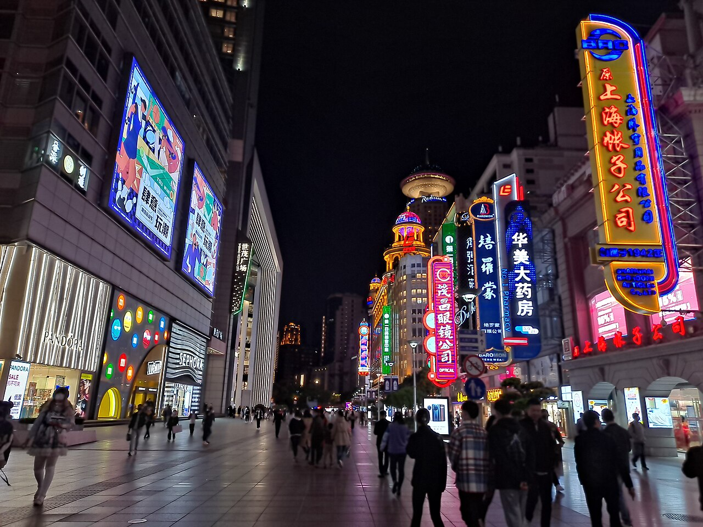
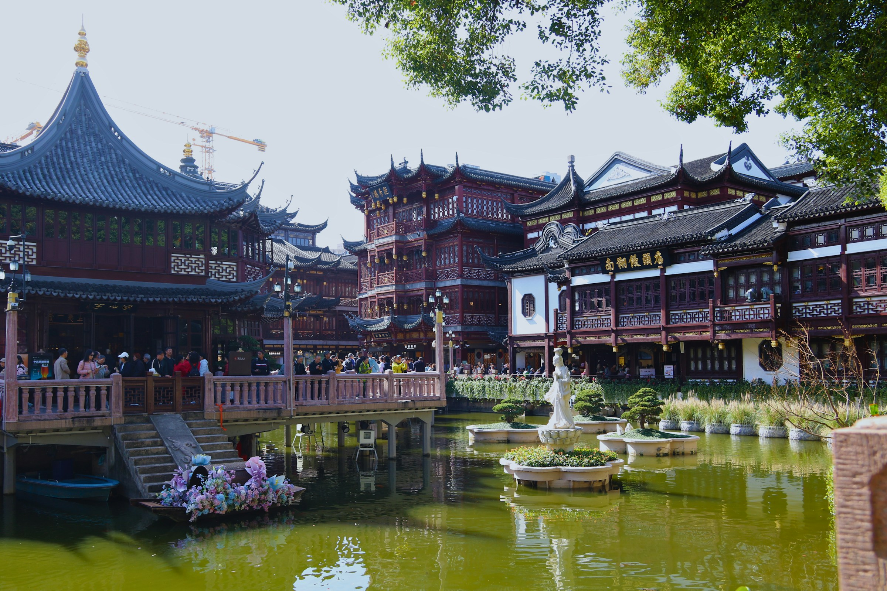
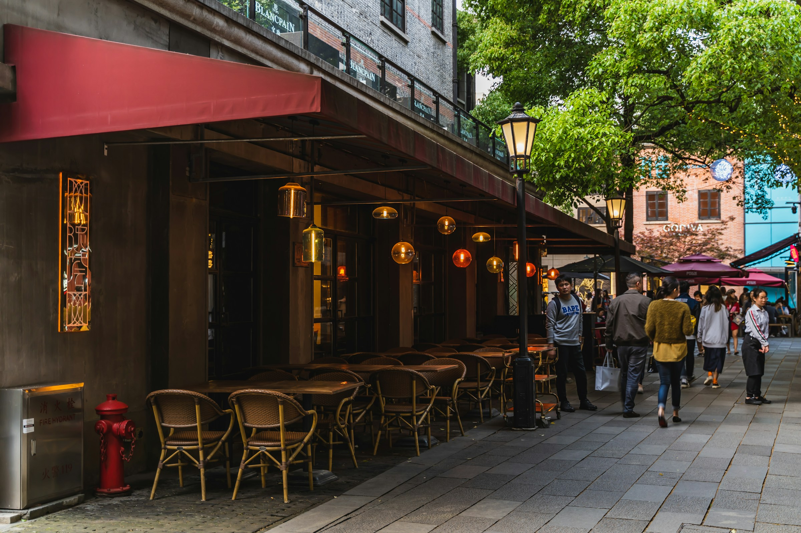
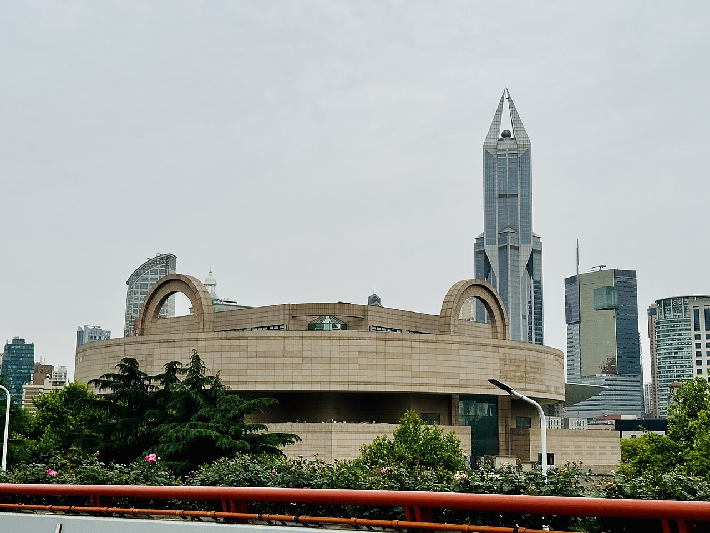
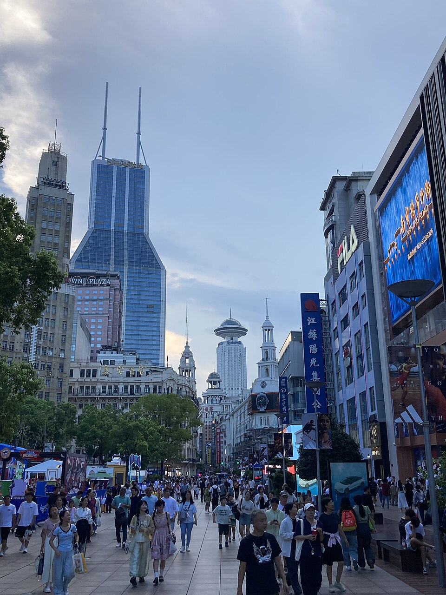

수능을 마친 딸의 새로운 출발을 축하하며, 할아버지 할머니부터 고등학생까지 열 명이 함께 떠나는 여행입니다.
첫날 저녁, 우리 가족이 함께 마주할 상하이의 불빛.
와이탄에서 바라본 루자쭈이
사진은 여행지 분위기 참고용이며 계절·날씨·장식은 방문 시점과 다를 수 있습니다.
관광지를 많이 채우는 대신, 이동 피로·추위·휴식·젊은 세대의 재미를 균형 있게 맞춘 일정입니다.
상하이 학교들이 2월 22일 개학하고, 춘절(2월 6일) 본시즌도 지난 뒤입니다. 관광 핵심일을 화~금에 두어 주말 혼잡을 피합니다. 2월 29일은 2027년에 존재하지 않으므로 25~29일안은 제외했습니다.
성인 7명 · 고등학생 3명. 항공·디즈니·관광지의 연령 요금 기준이 다르므로 고등학생에게 어린이 요금이 자동 적용되지 않습니다.
울산에서 김해공항은 리무진으로 1시간대, 인천공항은 5시간 이상입니다. 집 문을 나서서 호텔에 도착하기까지의 총시간이 김해가 훨씬 짧습니다.
와이탄·난징루·인민광장·예원·신톈디에 모두 가깝고, 매번 지하철을 갈아타지 않아도 택시로 일정을 운영하기 쉬운 곳입니다. 호텔을 옮길 이유가 없습니다.
매일 야외 60~90분 → 실내·식사 → 호텔 휴식을 반복합니다. 날짜 버튼을 눌러 하루씩 살펴보세요.

네온이 켜진 난징동루에서, 상하이의 첫 저녁을 시작합니다.
난징동루 보행자 거리의 밤

굽이진 처마와 연못을 따라, 오래된 상하이를 만나는 오전.
예원 주변·호심정 일대
A팀의 하루, 동화 속 성을 만나러 가는 날.
상하이 디즈니랜드

천천히 걷고, 커피 한 잔 마시며 함께 보내는 오후.
신톈디 카페 거리

인민광장에서 느긋하게 시작해, 저녁에는 모두 함께 기념 만찬을 즐기는 날.
상하이박물관 · 인민광장관 외관

마지막 오전은 난징루에서, 기념품과 함께 여행의 여운을 챙깁니다.
난징동루의 낮 풍경
디즈니는 하루 1.5~2.5만 보를 걷고 추위 속에서 기다리는 곳입니다. 젊은 가족의 만족도는 높이고, 조부모는 보호하는 구성입니다.
운영 예시일 뿐입니다. 아내·형수의 참가 희망을 확인해 바꿉니다. 16세 미만은 16세 이상과 함께 입장해야 하므로 성인 동행은 필수입니다.
디즈니를 빼기로 하면, 그 하루는 주자자오 수향마을(도심에서 전용 미니버스 약 60분)이 대안입니다. 2월 말 수변 바람과 돌길 때문에 조부모 만족도는 날씨에 따라 갈립니다.
10인 가족에게는 '가장 유명한 소형 맛집'보다 예약 가능한 중대형 식당이 중요합니다. 기념 만찬 한 번만 미리 확정하고, 나머지 끼니는 컨디션에 따라 정합니다.
추운 날에는 가족 체력에 따라 호텔식·몰 식당으로 바로 바꿀 수 있어야 합니다. 디즈니타운에도 1인 51~100위안대 아시아식 테이블 서비스 식당이 있습니다.
1인 평균 약 182만원. 예약 견적이 아니라 결정을 돕는 계획값이며, 쇼핑·선물비는 들어 있지 않습니다. 환율은 1위안 = 205원으로 계산했습니다.
2월 말은 대학 일정과 가까워서, 최저가보다 일정 변경 조건이 더 중요합니다.
겨울 평균 기온. 눈은 드물지만 북풍과 습도 때문에 체감온도가 낮습니다. 와이탄·유람선·디즈니 만족도는 기온보다 바람과 비가 좌우하므로, 출발 7~10일 전 예보를 보고 야외 순서를 조정합니다.
한국 일반여권의 30일 무비자는 현재 2026년 12월 31일까지로 안내되어 있어, 2027년 2월에 자동 적용된다고 볼 수 없습니다. 12월 말~1월 초 중국대사관 안내를 다시 확인하고, 연장이 없으면 관광비자(온라인 신청 가능)를 준비합니다. 여권 만료가 가까운 가족은 미리 갱신합니다.
Alipay·Weixin Pay에 국제카드를 연결해 쓸 수 있습니다(200위안 초과 거래에 수수료 3%가 붙을 수 있음). 열 명 모두가 결제 전문가일 필요는 없습니다. 주결제자 2~3명 + 국제카드 + 소액 현금 백업. 지하철은 컨택리스 카드를 개찰구에 바로 터치해도 됩니다.
대표 4~6명이 데이터 로밍 또는 eSIM을 각각 확보하고, 조부모는 가족 핫스폿을 보조로 씁니다. 각 휴대전화에 호텔 영문명·중국어 주소, 여행 책임자 번호, 항공편, 여권 사본, 보험증권 번호를 오프라인 저장하고, 종이 한 장을 조부모 가방과 제 가방에 각각 넣습니다.
해외치료비·긴급후송·항공 지연·수하물 보장을 비교하고, 고령자 가입한도와 기존 질환 면책을 확인합니다. 한 사람이 아프면 열 명의 일정이 바뀌므로 줄이지 않는 항목입니다. 현재 중국 입국 시 건강신고서·PCR 요구는 없으나 출발 2~4주 전 다시 확인합니다.
체크한 내용은 이 기기에 저장됩니다.
붉은 표시가 제안하는 1순위입니다. 금액은 표준형 예산 대비 증감입니다.
딸의 대학 등록·OT 일정과 겹치지 않는지가 기준. 2/25~3/1은 삼일절 귀국이라 혼잡 가능.
Marriott는 기념 만찬 장소와 같은 건물이라 이동이 없습니다.
아내·형수·조부모의 희망을 먼저 묻습니다. 미방문이면 그 하루는 주자자오 대안.
4객실은 3인실 두 개의 침구를 호텔이 서면 확인해줄 때만.
열 명 상당수가 울산권에서 모인다는 전제. 서울 거주 가족이 있으면 김포–훙차오도 검토.
조부모 편안함에는 효과가 크지만, 시내 짧은 구간은 택시 3대가 더 유연합니다.
많이 보는 것보다,
열 명이 좋은 컨디션으로
함께 기억할 장면을 만드는 것.
이 여행에서 가장 아까운 지출은 비싼 호텔비가 아니라, 조금 아끼려다 열 명이 지쳐 서로를 기다리는 시간입니다.
2026. 9. 24 조사 기준 · 가격·정책은 계획값이며 예약 전 재확인합니다.